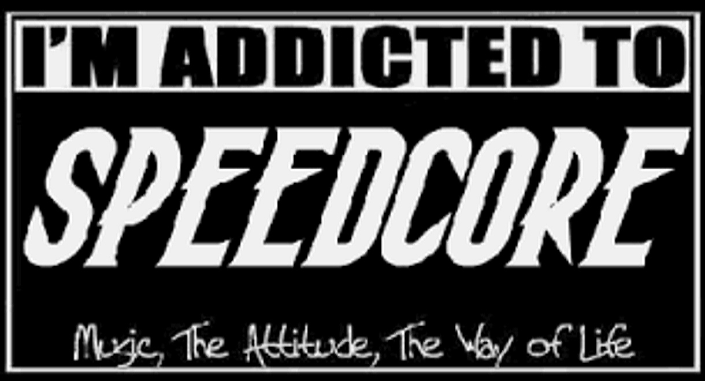

 Speedcore is an extreme subgenre of EDM (Electronic Dance Music) and hardcore techno. It comes from the gabber genre, which already has extreme tempos. Speedcore songs are identified by the tempo when it is between 300-1000 BPM.
Differences between Speedcore and similar genres
| Genre ------ Characteristics |
Gabber | Terrorcore | Speedcore |
|---|---|---|---|
| BPM | 160-220 | 150-300 | 300-1000 |
| Focus | Raves/Clubs | Horror element | Extremity and speed |
| Kick/Bass | Distorted | Overdriven | Extremely Distorted, Fast |